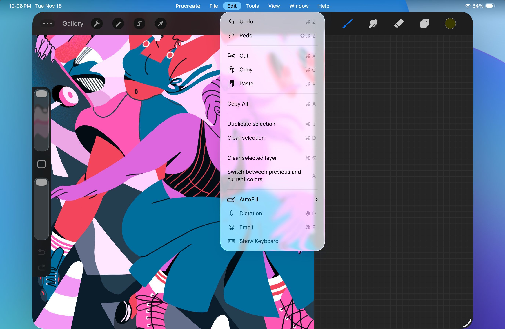
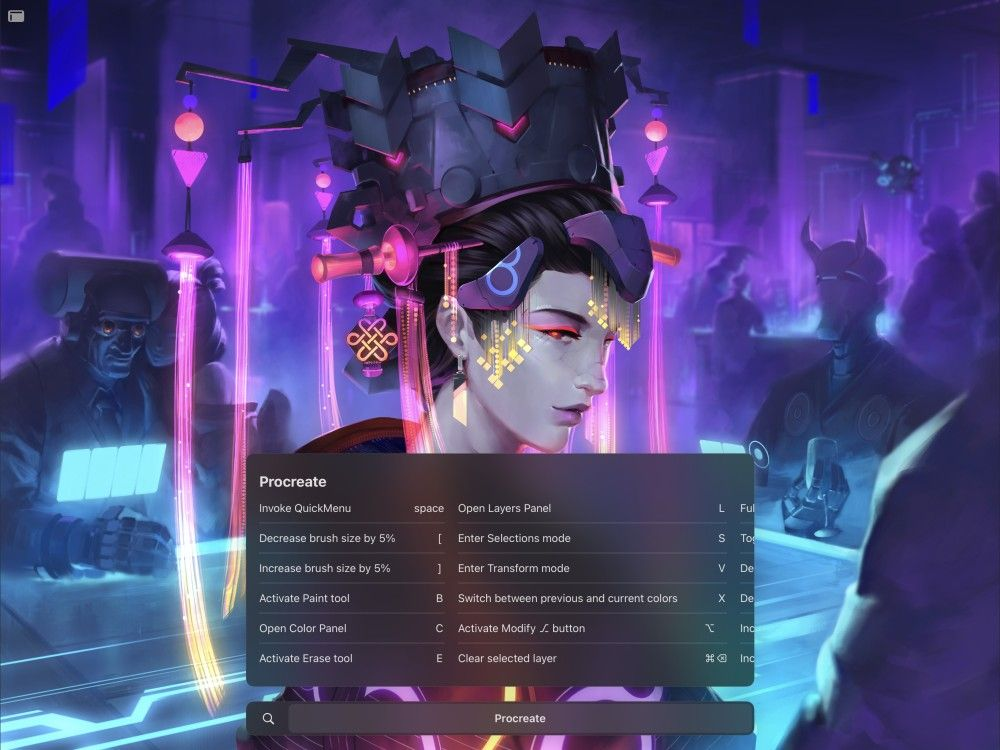

📖 Đã dịch sang tiếng Việt. Thuật ngữ chuyên môn giữ tiếng Anh — rê chuột để xem nghĩa (tooltip).
Keyboard Shortcuts
Kết nối bất kỳ bàn phím tương thích nào để truy cập nhiều tính năng nâng cao.
Kết nối Bàn phím
Phím tắt của Procreate hoạt động với bất kỳ bàn phím nào đã kết nối.
Kết nối bất kỳ bàn phím tương thích nào qua Bluetooth hoặc Smart Connector của iPad Pro.
Danh sách Phím tắt
Tab Procreate:
⌘ ,: Cài đặt Procreate (Settings iPadOS → Apps → Procreate)
⌘ H: Ẩn Procreate
⌥ ⌘ H: Ẩn các ứng dụng khác
⌘ K: Mở Actions Menu (menu hành động, biểu tượng cờ lê)
Tab File (tệp):
⌘ O: Open (mở, hiện không hoạt động)
Pro Tip
In the File tab, tap 'Open Recent' and select files recently added to the Files app to add them as new canvases in the Gallery.
Tab Edit (chỉnh sửa):
⌘ Z: Hoàn tác thao tác trước
⇧⌘ Z: Làm lại thao tác đã hoàn tác trước đó
⌘ X: Cut (cắt) layer hoặc vùng chọn (gỡ bỏ và đặt vào clipboard)
⌘ C: Copy (sao chép) layer hoặc vùng chọn (gửi bản sao tới clipboard)
⌘ V: Paste (dán) nội dung hiện tại từ clipboard vào khung vẽ
⌘ A: Sao chép toàn bộ nội dung đang hiển thị đã chọn vào clipboard
⌘ J: Duplicate (nhân đôi) layer hoặc vùng chọn sang layer phía trên
⌘ D: Xóa vùng chọn (khi dùng Selections, bỏ chọn tất cả)
⌘⌫: Xóa toàn bộ nội dung khỏi layer hoặc vùng đã chọn
X: Chuyển đổi giữa màu hiện tại và màu trước đó
Pro Tip
You can also tap hold the color in the top right to do this.
🌐 D: Bật Dictation (nhập liệu bằng giọng nói)
🌐 E: Gọi menu emoji khi đang nhập Text (chữ)
Tab Tools (công cụ):
B: Chuyển sang công cụ paint, hoặc mở Brushes (cọ) nếu Paint đang kích hoạt
E: Chuyển sang công cụ erase, hoặc mở brushes nếu erase đang kích hoạt
[: Giảm kích thước cọ 5%
]: Tăng kích thước cọ 5%
⌘ [: Giảm kích thước cọ 1%
⌘ ]: Tăng kích thước cọ 1%
⇧ [: Giảm kích thước cọ 10%
⇧ ]: Tăng kích thước cọ 10%
⌘ U: Vào điều chỉnh Hue, Saturation, and Brightness (sắc độ, độ bão hòa, độ sáng) cho layer hoặc vùng chọn
⌘ B: Vào điều chỉnh Color Balance (cân bằng màu) cho layer hoặc vùng chọn
S: Vào công cụ Selections (vùng chọn)
V: Vào công cụ Transform (biến đổi)
When using Transform:
▲ (mũi tên lên): Đẩy nội dung lên trên một pixel
▼ (mũi tên xuống): Đẩy nội dung xuống dưới một pixel
◀ (mũi tên trái): Đẩy nội dung sang trái một pixel
► (mũi tên phải): Đẩy nội dung sang phải một pixel
L: Mở Layers (lớp)
C: Mở Colors (màu)
⌥: Kích hoạt nút Modify (⃞ ô vuông giữa các thanh trượt ở thanh bên) khi phiên bản iPadOS mới hơn 17
M: Kích hoạt nút Modify (⃞ ô vuông giữa các thanh trượt ở thanh bên) khi phiên bản iPadOS 17 trở xuống
Spacebar (phím cách): Gọi QuickMenu
Tab View (hiển thị):
⌘ 0: Bật/tắt toàn màn hình trong giao diện Procreate
⌘ ;: Bật/tắt hiển thị Perspective Guide (đường dẫn phối cảnh)
Tab Window (cửa sổ):
⌘ W: Đóng hoàn toàn Procreate
⌘ M: Thu nhỏ Procreate
🌐 F: Vào Full Screen (toàn màn hình, cho Procreate chiếm toàn bộ màn hình)
⌃🌐 C: Căn giữa cửa sổ Procreate
⌃🌐 ◀: Căn cửa sổ sang nửa bên trái màn hình
⌃🌐 ►: Căn cửa sổ sang nửa bên phải màn hình
⌃🌐 ▲: Căn cửa sổ sang nửa trên màn hình
⌃🌐 ▼: Căn cửa sổ sang nửa dưới màn hình
⌃⇧🌐 ◀: Sắp xếp các cửa sổ trái và phải của bạn
⌃⇧🌐 ►: Sắp xếp các cửa sổ phải và trái của bạn
⌃⇧🌐 ▲: Sắp xếp các cửa sổ trên và dưới của bạn
⌃⇧🌐 ▼: Sắp xếp các cửa sổ dưới và trên của bạn
⌥🌐 ◀: Chuyển Procreate sang Slide Over bên trái
⌥🌐 ◀: Chuyển Procreate sang Slide Over bên phải
🌐 \: Ẩn Slide Over
Cách truy cập phím tắt
Truy cập các phím tắt khác nhau bằng cách đặt Procreate ở chế độ Windowed (cửa sổ) và chạm vào các thanh menu khác nhau ở đầu màn hình iPad.

Để đặt các ứng dụng ở chế độ Windowed, vào Settings → Multitasking & Gestures → bật Windowed Apps. Để truy cập menu trên cùng trong Procreate, chạm hai lần vào thanh trên cùng trong giao diện, rồi vuốt xuống từ đầu màn hình:

Đặt Procreate ở chế độ Windowed
Khi Windowed Apps đã bật (xem phần trên), chạm hai lần vào thanh menu trên cùng trong Procreate.
Vuốt xuống để gọi menu
Sau khi chạm hai lần để vào chế độ Windowed với Procreate, vuốt xuống (hơi lệch tâm) để gọi thanh menu. Mỗi tab của thanh menu hiển thị các chức năng khác nhau cùng phím tắt tương ứng, và bạn cũng có thể tìm trong tab Help (trợ giúp) để tìm một chức năng hoặc phím tắt cụ thể.
Phím tắt của Procreate được dựa trên các tiêu chuẩn sẵn có trong các phần mềm minh họa khác.
Heads Up
To access Keyboard Shortcuts when working on iPadOS versions below 26, hold down the CMD key on your keyboard.

Still have questions?
If you didn't find what you're looking for, explore our video resources on YouTube or contact us directly. We’re always happy to help.